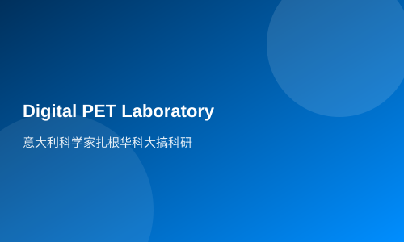

Italian scientists are rooted in Huake University for scientific research
Hubei Daily News (Reporter Hai Bing, Communicator Wang Xiaoxiao) Recently, Professor Nicola from the Digital PET Laboratory of the School of Life Sciences at Huazhong University of Science and Technology was awarded the title of Ambassador of Molise Region by the President of Italy. This honor is granted annually to a maximum of four people who live abroad and are scientists, cultural workers, or entrepreneurs, with the title being valid for life.
Professor Nicola, a young professor from Italy, graduated from Hamburg University in Germany and was once a core member of the SiPM (silicon photomultiplier) research team at Russia's National Atomic Research University. He is one of the earliest scientists globally to study the application of SiPM in digital PET (positron emission tomography) detectors.
In 2009, through a national cooperation project between China and Russia, Professor Xie Qingguo from Huazhong University of Science and Technology's Digital PET team met Professor Valery, Nicola's research partner. After learning about the new technology of digital PET, Valery was delighted to realize that the full-digital PET technical framework, especially the MVT signal processing method, could maximize the technological advantages of SiPM semiconductor silicon photomultiplier devices.
In 2013, Professor Nicola visited Huazhong University of Science and Technology. Impressed by the prospects of digital PET, he made a significant decision to leave his hometown and come to China to join the passionate Digital PET team. In 2015, Nicola officially became a full-time professor at Huazhong University of Science and Technology. 'It is precisely because we all share an intense passion for science that we have the opportunity to work together,' Professor Xie Qingguo introduced, one night when he was working overtime in his office conducting experiments, someone knocked urgently on the door; upon opening it, he saw Nicola with dark circles under his eyes holding a drawing and excitedly telling him that he had drawn a mass distribution map of single photons. That night, they discussed the drawings until dawn, as if Columbus had discovered a new continent.
Professor Nicola, who has been working at Huazhong University of Science and Technology for nearly two years, said that he feels extremely proud to be involved in building world-class laboratories dedicated to PET detector research, design, and testing. He has given multiple oral presentations at major international conferences showcasing the achievements of the Digital PET Laboratory, and his articles and monographs have been published numerous times in top-tier journals worldwide.
This March, Nicola's wife and daughter came to Wuhan. They expressed that their family will settle here. With a smile, Nicola said that this year he has an important task: to learn Chinese culture and change his lifestyle so as to better integrate into life in China.